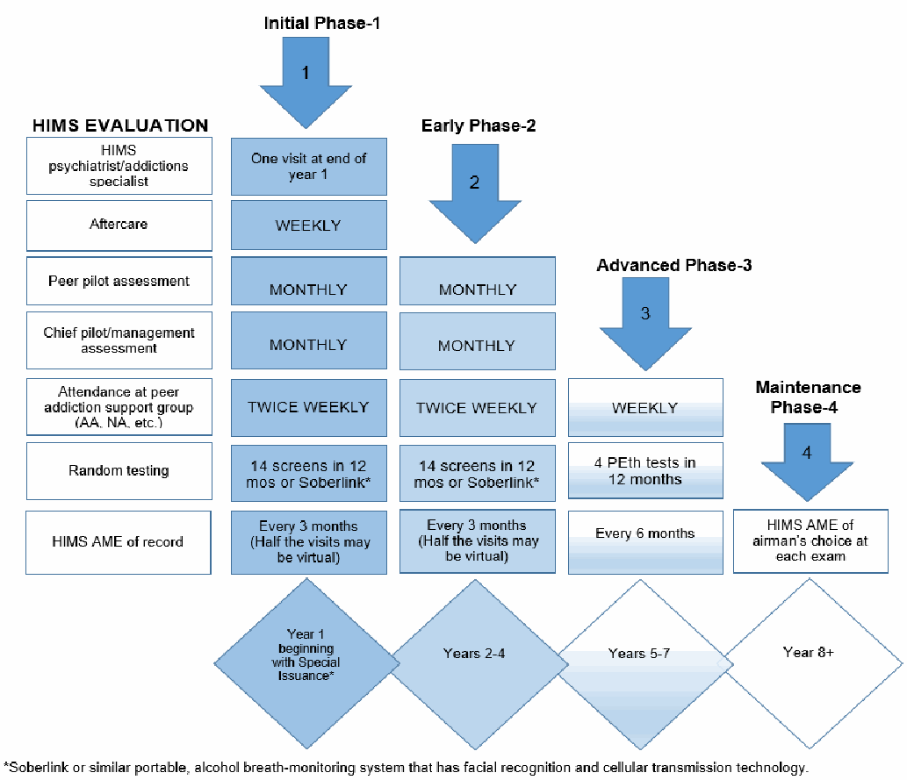

Drug/Alcohol Monitoring Programs and HIMS
(09/28/2022)
FORMAL HIMS CASES
- 1) This refers ONLY to Pilots who fly for an airline with a HIMS Chairman .
- 2) Case submissions must be sent electronically to WASHINGTON, DC via Huddle.
- 3) Must have an accompanying HIMS DATA SHEET .
- 4) Paper format submissions will NOT BE ACCEPTED after January 1, 2023.
- 5) Airline HIMS Chairs will be advised of HIMS AMEs not in compliance at that time.
- 6) All HIMS AMEs must successfully complete Huddle training to be placed on the FAA HIMS AME List . Send training requests to 9-AAM-HIMS@faa.gov .
DO NOT SEND CASE FILES TO THE ABOVE EMAIL.
Send ALL OTHER Drug and Alcohol cases to AMCD at the address indicated on the HIMS-Trained AME Checklist . (No Data Sheet needed.)
735
HIMS AME - HUDDLE ELECTRONIC CASE SUBMISSION
(Updated 01/27/2021)
At this time, only HIMS AMES may submit cases electronically via Huddle.
To do so, HIMS AMES must first complete initial Huddle training. If you do not have a Huddle account or have not completed training, send requests to 9-AAM-HIMS@faa.gov .
- Submit only first- and second-class HIMS cases.
- Do NOT send third-class cases via huddle.
Steps for Electronic Submission
*When the HIMS Analyst determines the file is complete, they will move the folder from the Huddle workspace for FAA review. For detailed instructions, log into your Huddle account and go to the “Huddle Training and Updates” page. |
|---|
FREQENTLY ASKED QUESTIONS (FAQs)
- 1. What is the preferred format for uploaded documents?
Use PDF or Microsoft Word format.
- 2. Is there a limit to the number of folders or limit on size of the files?
There is no limit on the number of folders. File size is limited to 20 GB.
- 3. How do I identify different reports from the same consultant? I might have a Neuropsychologist initial report, followed by a second report or a follow up report, etc.
Place the naming conventions at the beginning of the document. If you have additional documents as described above, place a dash after the naming convention then add the description. (EX: Neuropsychologist Report – follow up.)
- 4. Should I wait until the airman’s folder has all the required files before sharing them or should I share them as they come in?
736
Do not share the folder with the HIMS Analyst Team until ALL the required documents are present.
- 5. How do I provide missing or additionally requested information after I have already shared the folder?
If you need to submit a document after you have already shared a folder, simply create another folder with the airman’s identifying information, label it “additional documents,” add the additional files, and then share the new folder with the HIMS Analyst Team.
- 6. Once I share the files in Huddle, do I also have to mail them to the FAA?
No, once you share the file electronically, do NOT mail the same file. Duplicate copies will slow down the review process.
- 7. What happens to the folders once they are shared with the HIMS Analyst Team?
Once an entire folder is shared, the analyst checks for any missing information. If the folder is complete, it moves into the process for FAA review.
- 8. Will the Aerospace Medical Certification Division (AMCD) staff have access to the Huddle space as well?
Yes, they will have as-needed access to the files in your Huddle workspace.
- 9. What about third-class Drug and Alcohol cases?
Third class cases are processed at the Aerospace Medical Certification Division in Oklahoma City and should be mailed to the address indicated on the HIMS Checklist.
737
HIMS trained AME Checklist – Drug and Alcohol MONITORING INITIAL Certification
(Updated 03/31/2021)
Airman Name _____________________________________ MID or PI#________________________
Submit this MANDATORY checklist and ALL supporting information outlined below within 14 days of deferred exam. Use only ONE method to submit. Sending by multiple modes (or duplicates) will delay the review process.
Check one of the boxes below to indicate the method of the submission.
- � Electronic submission: First and second class HIMS cases ONLY - USE HUDDLE
- � All others, mail to:
Using regular mail US Postal Service: Using FedEx, UPS, etc.:
Federal Aviation Administration Federal Aviation Administration
Civil Aerospace Medical Institute, Building 13 Medical Appeals Section, AAM-313
Aerospace Medical Certification Division AAM-313 Aerospace Medical Certification Division
PO Box 25082 6700 S. MacArthur Boulevard, Room B-13
Oklahoma City, OK 73125-9914 Oklahoma City, OK 73169
The specific information required for each report type is detailed in the corresponding numbered (#) items on the FAA Certification Aid – HIMS Drug and Alcohol – INITIAL.
0.* HIMS-Trained AME Checklist - Drug and Alcohol MONITORING INITIAL Certification. *Use this checklist as a coversheet and submit the rest of the information, numbered and ordered as shown below:
NA | Yes | No |
|---|
1. HIMS AME Report FACE-TO-FACE, IN-OFFICE EVALUATION (narrative):
- Signed and dated………………………………………………………………………………………
N/A | Yes | No |
|---|
(N/A for third class airmen)………………………………………………………….………………..........
3. Drug and /or alcohol TREATMENT RECORDS:
N/A | Yes | No |
|---|
- Include any applicable psychotherapy notes and pre-treatment psychiatrist reports…………..
4. PSYCHIATRIST EVALUATION:
N/A | Yes | No |
|---|
- HIMS-trained psychiatrist for most first and second class airmen.........................……………..
- Most third class will require a board-certified psychiatrist.
N/A | Yes | No |
|---|
5. NEUROPSYCHOLOGIST EVALUATION and RAW TESTING DATA……………………………….
- CogScreen results
6. ADDITIONAL RECORDS:
N/A | Yes | No |
|---|
- Aftercare Report (Group)………………………………………………………………………………...
- Airline Reports: Chief Pilot Report and Peer Pilot Letter (for commercial pilots 1st or 2nd-class; 3rd class N/A
- Airman’s Personal Statement…………………………………………………………..........................
- Drug or Alcohol Testing…………………………………………………………………………………...
- DUI Records (BAC, court records, driving/DMV records)...............................................................
Medical Records (List any other conditions relevant to this case)…………..………………………....
- SI Additional Reports (Only when specified by the Authorization Letter)……………………....
________________________________________________ ____________________
HIMS-trained AME Signature Date
MISSING OR INCOMPLETE ITEMS WILL CAUSE CERTIFICATION REVIEW DELAYS.
- Send all of the above information AND this Checklist in ONE PACKAGE, via electronic submission or mailed to the appropriate address listed above.
- Upon receipt and review of all of the above information, additional information or action may be requested.
738
FAA CERTIFICATION AID - HIMS Drug and Alcohol - INITIAL (Page 1 of 5)
(Updated 01/27/2021)
The following information is to assist your treating physician/provider who may be unfamiliar with FAA medical certification requirements. It lists the ABSOLUTE MINIMUM information required by the FAA to make a determination on an airman medical certificate. You should strongly consider taking a copy to each evaluator so they understand what specific information is needed in their report to the FAA. If each item is not addressed by the corresponding provider there may be a delay in the processing of your medical certification until that information is submitted. Additional information such as clinic notes or explanations should also be submitted, as needed.
ALL REPORTS MUST BE CURRENT (WITHIN THE LAST 90 DAYS) FOR FAA PURPOSES.
REPORT FROM | MUST SPECIFICALLY ADDRESS OR STATE THE FOLLOWING |
|---|---|
HIMS AME CHECKLIST |
|
#1 HIMS AME REPORT (narrative) The airman must establish with a HIMS-trained AME if monitoring is required. |
If using Huddle, submit the following as INDIVIDUAL PDFs:
Submit all the information as ONE PACKAGE (via Huddle or mailed to the appropriate address on the HIMS-Trained AME Checklist.) Review for certification WILL BE DELAYED if package is incomplete. |
739
FAA CERTIFICATION AID - HIMS Drug and Alcohol - INITIAL (Page 2 of 5)
#2 HIMS AME DATASHEET* |
|
|---|---|
#3 DRUG AND/OR ALCOHOL TREATMENT RECORDS |
|
#4 PSYCHIATRIST EVALUATION 1st and 2nd class commercial airmen will require a HIMS trained psychiatrist* to perform this evaluation in most cases. Most others will require a board certified psychiatrist * To find a HIMS psychiatrist, the airman should FIRST establish with a HIMS-trained AME and should refer to their letter to determine what level of evaluation is required. | The report must include at a minimum:
Clinical interview that covers the following:
|
740
FAA CERTIFICATION AID - HIMS Drug and Alcohol - INITIAL (Page 3 of 5)
#5 NEUROPSYCHOLOGIST EVALUATION AND RAW TEST DATA* *CogScreen-AE results and neurocognitive evaluation | For complete details, see the Neuropsychological Evaluation section of the Specifications for Psychiatric and Neuropsychological Evaluations for Substance Dependence/Abuse . The neuropsychologist report MUST address: 1. Qualifications: State your certifications and pertinent qualifications. 2. Records review: What documents were reviewed, if any? a. Specify clinic notes and/or notes from other providers or hospitals; and b. Verify if you were provided with and reviewed a complete copy of the airman’s FAA medical file. 3. Results of clinical interview: Detailed history regarding psychosocial or developmental problems; academic and employment performance; family or legal issues; substance use/abuse (including treatment and quality of recovery); aviation background and experience; medical conditions and all medication use; and behavioral observations during the interview and testing. Include any other history pertinent to the context of the neuropsychological testing and interpretation. 4. Mental status examination 5. Testing results: a. CogScreen-Aeromedical Edition (CogScreen-AE); and b. Remainder of the core test battery. 6. Interpretation: a. The overall neurocognitive status of the airman; b. Clinical diagnosis(es) suggested or established based on testing, if any; c. Discuss any weaknesses or concerning deficiencies that may potentially affect safe performance of pilot or aviation-related duties, if any; d. Discuss rationale and interpretation of any additional testing that was performed; and include e. Any other concerns. 7. Recommendations: Additional testing, follow-up testing, referral for medical evaluation (e.g., neurology evaluation and/or imaging), rehabilitation, etc. Submit report along with the CogScreen-AE computerized summary report (approximately 13 pages) and summary score sheet for ALL additional testing performed. |
|---|
741
FAA CERTIFICATION AID - HIMS Drug and Alcohol - INITIAL (Page 4 of 5)
#6 ADDITIONAL RECORDS
AFTERCARE REPORT (Group) | Progress report should include:
|
|---|---|
AIRLINE REPORTS Peer Pilot (from employer, ALPA, etc.) Chief Pilot, Flight Operation Supervisor, or Airline Management Designee* * If the airman is 1st or 2nd class and employed by an air carrier. | Must attest, to the best of their knowledge, the airman’s continued total abstinence from drugs or alcohol. Monthly reports must address:
Combine all monthly reports into ONE PDF if submitting via Huddle. |
AIRMAN PERSONAL STATEMENT DRUG AND ALCOHOL (D&A) |
If not in a recovery program, this should be stated. |
742
FAA CERTIFICATION AID - HIMS Drug and Alcohol - INITIAL (Page 5 of 5)
DRUG OR ALCOHOL TESTING | 1. Must be random, unannounced drug/alcohol testing. (Urine EtG/EtS, PEth testing or a mobile alcohol monitoring system are preferred.) 2. Must state if the testing is performed by:
3. Drug and/or alcohol testing results summarized, how often tested, how many tests performed to date.
|
|---|---|
DUI RECORDS | Court Records
Driving record/Department of Motor Vehicles (DMV) Records
|
MEDICAL RECORDS | List any other medical records relevant to this case. |
SI ADDITIONAL REPORTS |
|
743
SPECIFICATIONS FOR PSYCHIATRIC AND NEUROPSYCHOLOGICAL EVALUATIONS
FOR SUBSTANCE ABUSE/DEPENDENCE
(Updated 05/29/2024)
Why are both a psychiatric and a neuropsychological evaluation required? Substance use disorders, including abuse and dependence, not in satisfactory recovery make an airman unsafe to perform pilot duties. These evaluations are required to assess the disorder, quality of recovery, and potential other psychiatric conditions or neurocognitive deficits. Due to the differences in training and areas of expertise, separate evaluations and reports are required from both a qualified psychiatrist and a qualified clinical psychologist for determining an airman’s medical qualifications. This guideline outlines the requirements for these evaluations.
Will I need to provide any of my medical records? You should make records available to both the psychiatrist and clinical neuropsychologist prior to their evaluations, to include:
- Copies of all records regarding prior psychiatric/substance-related hospitalizations, observations or treatment not previously submitted to the FAA.
- A complete copy of your agency medical records. You should request a copy of your agency records be sent directly to the psychiatrist and psychologist submitting a Request for Airman Medical Records (FAA Form 8065-2).
THE PSYCHIATRIC EVALUATION
Who may perform a psychiatric evaluation? Psychiatric evaluations must be conducted by a qualified psychiatrist who is board-certified by the American Board of Psychiatry and Neurology or the American Board of Osteopathic Neurology and Psychiatry and must either be board certified in Addiction Psychiatry or have received training in the Human Intervention Motivation Study (HIMS) program. Preference is given for those who have completed HIMS training. Using a psychiatrist without this background may limit the usefulness of the report.
What must the psychiatric evaluation report include? At a minimum:
- A review of all available records, including academic records, records of prior psychiatric hospitalizations, and records of periods of observation or treatment (e.g., psychiatrist, psychologist, social worker, counselor, or neuropsychologist treatment notes). Records must be in sufficient detail to permit a clear evaluation of the nature and extent of any previous mental disorders.
- A thorough clinical interview to include a detailed history regarding psychosocial or developmental problems; academic and employment performance; legal issues; substance use/abuse (including treatment and quality of recovery); aviation background and experience; medical conditions, and all medication use; and behavioral observations during the interview.
- A mental status examination.
- An integrated summary of findings with an explicit diagnostic statement, and the psychiatrist’s opinion(s) and recommendation(s) for treatment, medication, therapy, counseling, rehabilitation, or monitoring should be explicitly stated. Opinions regarding
clinically or aeromedically significant findings and the potential impact on aviation safety must be consistent with the Federal Aviation Regulations.
744
What must be submitted by the psychiatrist? The psychiatrist’s comprehensive and detailed report, as noted above, plus copies of supporting documentation. Recommendations should be strictly limited to the psychiatrist’s area of expertise. Psychiatrists with questions are encouraged to email 9-AVS-Psychiatry-Branch@faa.gov .
THE NEUROPSYCHOLOGICAL EVALUATION
Who may perform a neuropsychological evaluation? Neuropsychological evaluations must be conducted by a neuropsychologist who is included on the provider list, accessed through the following link: FAA Neuropsychologist List .
What must the neuropsychological evaluation report include? At a minimum:
- A review of all available records, including academic records, records of prior psychiatric hospitalizations, and records of periods of observation or treatment (e.g., psychiatrist, psychologist, or pediatric neuropsychiatrist treatment notes). Records must be in sufficient detail to permit a clear evaluation of the nature and extent of any previous mental disorders.
- A thorough clinical interview to include a detailed history regarding psychosocial or developmental problems; academic and employment performance; legal issues; substance use/abuse (including treatment and quality of recovery); aviation background and experience; medical conditions, and all medication use; and behavioral observations during the interview and testing.
- A mental status examination.
- Interpretation of a full battery of neuropsychological and psychological tests including but not limited to the “core test battery” (specified below).
- An integrated summary of findings with an explicit diagnostic statement, and the neuropsychologist’s opinion(s) and recommendation(s) regarding clinically or aeromedically significant findings and the potential impact on aviation safety consistent with the Federal Aviation Regulations.
What is required in the “core test battery?”
To promote test security, itemized lists of tests comprising psychological/neuropsychological test batteries have been moved to a secure site. Authorized professionals should use the portal at FAA Neuropsychology Testing Specifications . For access, email a request to:
What must be submitted?
The neuropsychologist’s report as specified in the portal, plus:
- Copies of all computer score reports; and
- An appended score summary sheet that includes all scores for all tests administered. When available, pilot norms must be used. If pilot norms are not available for a particular test, then the normative comparison group (e.g., general population, age/education-corrected) must be specified. Also, when available, percentile scores must be included.
Recommendations should be strictly limited to the psychologist’s area of expertise. For questions about testing or requirements, email 9-amc-aam-NPTesting@faa.gov .
What else does the psychologist need to know?
745
- The FAA will not proceed with a review of the test findings without the above data.
- The data and clinical findings will be carefully safeguarded in accordance with the APA Ethical Principles of Psychologists and Code of Conduct (2002) as well as applicable federal law.
- Raw psychological testing data may be required at a future date for expert review by one of the FAA’s consulting clinical psychologists. In that event, authorization for release of the data by the airman to the expert reviewer will need to be provided.
Additional Helpful Information
- 1. Will additional evaluations or testing be required in the future? If eligible for unrestricted medical certification, no additional evaluations would be required. However, pilots found eligible for Special Issuance will be required to undergo periodic re-evaluations. The letter authorizing special issuance will outline the specific evaluations or testing required.
- 2. Useful references for the psychologist:
- MOST COMPREHENSIVE SINGLE REFERENCE:
Aeromedical Psychology (2013). C.H. Kennedy & G.G. Kay (Editors). Ashgate.
- Pilot norms on neurocognitive tests: Kay, G.G. (2002). Guidelines for the Psychological Evaluation of Aircrew Personnel. Occupational Medicine, 17 (2), 227-245.
- Aviation-related psychological evaluations: Jones, D. R. (2008). Aerospace Psychiatry. In J. R. Davis, R. Johnson, J. Stepanek & J. A. Fogarty (Eds.), Fundamentals of Aerospace Medicine (4th Ed.), (pp. 406-424). Philadelphia: Lippencott Williams & Wilkins.
746
DRUG AND ALCOHOL MONITORING AND HIMS
RECERTIFICATION REQUIREMENTS
HIMS AMES should use the following section once the airman has a valid Special Issuance Authorization for a Drug or Alcohol condition.
In response to NTSB Safety Recommendation A-07-43, the FAA has extended follow up for airmen with a diagnosis of substance dependence on a HIMS Step Down Plan.
HIMS AMES should use the following pages to guide them in recommending testing frequency and general milestones.
747
HIMS AME INFORMATION – HIMS STEP DOWN PLAN (Updated 09/29/2021)
Note that the time course listed is nominal and indicates usual, uncomplicated progression of recovery but may be modified on a case-by-case basis.
- Not all airmen will progress at the same rate.
- Progression is NOT guaranteed.
- An airman’s progression is based on compliance, his or her individual evaluation by HIMS professionals, and FAA review.
Permanent abstinence from mind and mood altering substances is required for the duration of the flying career.
The testing frequencies listed are minimums and may be increased at the discretion of the HIMS AME. AMEs should recommend a change in testing/evaluations when clinically appropriate and after the minimum time has passed in each stage.

748
PILOT INFORMATION – HIMS STEP DOWN
(Updated 10/25/2023)
IF YOU ARE A PILOT:
- (a) Continue to work with your sponsor/physician/therapist/support group and get/stay healthy.
- (b) Do not fly in accordance with 14 CFR 61.53 if you relapse.
- (c) Permanent abstinence from mind and mood altering substances is required for the duration of the flying career.
- (d) Work with your HIMS AME to obtain any necessary evaluations and documentation.
- (e) When submitting information: Coordinate with your AME to ensure ALL ITEMS are COMPLETE. Incomplete packages will cause a DELAY IN CERTIFICATION.
When you have passed the required minimum time AND your HIMS AME recommends you are ready to have a decrease in monitoring requirements, your HIMS AME will submit a report verifying this information. The FAA makes the determination if you meet requirements to reduce monitoring requirements.
- Examples of MINIMUM required items and testing are listed in the HIMS Step Down Plan illustration .
- You may require additional monitoring or testing based on your recovery.
- You may need to repeat a phase based on your recovery.
- In some cases, your HIMS AME may be able to transition you from Early Phase-2 to Advanced Phase-3 and Advanced Phase-3 to Maintenance Phase-4.
If and when appropriate, you will receive an updated Special Issuance letter with updated Special Issuance requirements.
749
HIMS AME Checklist - Drug and Alcohol Monitoring Recertification
(Updated 01/31/2024)
Pilot Name __________________________________________ PI#________________________________
Instructions to the HIMS AME:
- Address the following items based on your in-office exam and documentation review;
- Submit this Checklist (it must be signed and dated by the HIMS AME); AND
- Include supporting documentation reviewed to complete this checklist (including your HIMS AME report) within 14 days to:
Federal Aviation Administration
Civil Aerospace Medical Institute, Building 13
Aerospace Medical Certification Division, AAM-313
PO Box 25082
Oklahoma City, OK 73125-9867
Date of the INITIAL SI Authorization for Substance Dependence*: ___________________
*If there is a relapse or withdrawal of authorization at any time, the Time-in-Phase date is re-set to the date of the most recent Authorization Letter.
1. HIMS AME FACE-TO-FACE, IN OFFICE EVALUATION: Required EVERY 6 months for ALL CLASSES
No | Yes |
|---|
Any concerns that the airman is not successfully engaged in a continued abstinence-based recovery program or is not working a good program based on your clinical interview/evaluation and review of reports?
- Interval evaluations (every 3 months or as required by Authorization Letter) were unfavorable?....
- Any evidence or concern the airman has not remained abstinent? …………………………………..
- Any positive drug or alcohol tests since last HIMS evaluation? ………………………………………
- Any evidence of noncompliance or concern the airman is not working a good recovery program..
- Any NEW condition(s) that would require Special Issuance? (Do not include any new CACI
qualified condition.).………………………………………………………………………………………...
2. TREATING PSYCHIATRIST REPORT or HIMS PSYCHIATRIST REPORT: Required EVERY 12 months
for ALL CLASSES unless a different time interval is specifically stated in the Authorization Letter.
Not Due | Yes | No |
|---|
- Report(s) is/are favorable (no anticipated or interim treatment changes) ...………………....
- The psychiatrist recommends no additional treatment or monitoring.……............................
Items 3 - 5: The AME should review. Do not submit these items (3-5) to the FAA unless concerns are noted.
3. AFTERCARE COUNSELOR REPORTS: For 1st and 2nd class: Required every 3 months; 3rd class: Per Authorization Letter
N/A | Yes | No |
|---|
Show continued participation and abstinence-based sobriety? ………………………………..................
4. CHIEF PILOT REPORT(S): Required monthly for commercial pilots holding first- or second-class
N/A | Yes | No |
|---|
certificates (N/A for third-class):
- Report(s) is/are favorable? ………………………………………………………………………...
5. PEER PILOT REPORTS: Required monthly for commercial pilots holding first- or second-class certificates (N/A for third-class):
N/A | Yes | No |
|---|
- Report(s) is/are favorable with continued total abstinence? ……………………………………
6. ADDITIONAL REPORTS: Required ONLY when specified by the Authorization letter
N/A | Yes | No |
|---|
- HIMS related (AA attendance, therapy reports, etc.) are favorable and meet authorization requirements………………………………………………………………………………………….
- Reports required for other non-HIMS conditions all meet Authorization requirements……....
Yes | No |
|---|
7. I have no concerns about this airman and recommend re-certification for Special Issuance. ………………..
I have transitioned this pilot to the next Step Down Phase: 2 to 3 ________ 3 to 4 __________ N/A______
______________________________________ __________________________________
HIMS AME Signature Date of Evaluation
If ALL items fall into the clear column, the AME may issue with the time limitation specified in the Authorization letter. If ANY SINGLE ITEM falls into the SHADED COLUMN, the AME MUST DEFER or contact the FAA for guidance AND EXPLAIN in the HIMS evaluation report.
750
FAA CERTIFICATION AID – Drug and Alcohol Monitoring Recertification (Page 1 of 2)
(Updated 05/25/2016)
The following information is to assist your treating physician/provider who may be unfamiliar with FAA medical certification requirements. It lists the ABSOLUTE MINIMUM information required by the FAA to make a determination on an airman medical certificate. You should strongly consider taking a copy to each evaluator, so they understand what specific information is needed in their report to the FAA. If each item is not addressed by the corresponding provider there may be a delay in the processing of your medical certification until that information is submitted. Additional information such as clinic notes or explanations should also be submitted as needed. All reports must be CURRENT (within the last 90 days) for FAA purposes.
REPORT FROM | REQUIRED INTERVAL | MUST SPECIFICALLY ADDRESS OR STATE THE FOLLOWING (Drug and Alcohol Monitoring Recertification) |
|---|---|---|
HIMS AME | Every 6 months or per Authorization Letter for all classes | 1. Must be a face-to-face, in-person evaluation. 2. Must be performed by the HIMS AME listed on the Authorization Letter. 3. Summarize findings from additional interim evaluations that were performed by any other venue (phone/video/email), either at the AME’s discretion or as required by the Authorization Letter (every 1-3 months). 4. Summarize your aeromedical impression and evaluation as a HIMS AME based on the face-to-face evaluation AND review of the supporting documents.
5. State if the airman meets all the requirements of the Authorization Letter or describe why they do not. 6. Do you recommend continued Special Issuance in this airman? 7. Agreement to continue to serve as the airman’s HIMS AME and follow this airman per FAA policy. 8. Agreement to immediately notify the FAA (at 405-954-4821) of any change in condition, deterioration or stability, or if there is any positive drug or alcohol testing. 9. Using the HIMS AME Checklist - Drug and Alcohol Monitoring Recertification , comment on any items that fall into the shaded category on the Checklist. 10. Submit the HIMS AME Checklist, your HIMS AME written report, and all required supporting documentation that you reviewed with your package. |
DRUG OR ALCOHOL TESTING | Every 6 months or per Authorization Letter | 1. Must be random, unannounced drug/alcohol testing. (Urine EtG/EtS, PEth testing or a mobile alcohol monitoring system are preferred.) 2. At a minimum, frequency must be 14 tests over a 12-month period (can be more frequent at AME discretion). 3. Must state if the testing is performed by:
HIMS AME may require additional testing to supplement the testing conducted by the Air Carrier.
4. HIMS AME must immediately report any positive test to the FAA. |
PSYCHIATRIST HISTORY REPORT | Every 12 months or per Authorization Letter | 1. Summarize clinical findings and status of how the airman is doing. 2. Note any clinical concerns or changes in treatment plan. 3. Recommendations for any additional treatment or monitoring, if applicable. 4. Agreement to immediately notify the FAA or AME (at 405-954-4821) if there are any changes in the airman’s condition. 5. Interval treatment records if any, such as clinic or hospital notes, should also be submitted. |
751
FAA CERTIFICATION AID – Drug and Alcohol Monitoring Recertification (Page 2 of 2)
(Updated 05/25/2016)
The following information is to assist your treating physician/provider who may be unfamiliar with FAA medical certification requirements. It lists the ABSOLUTE MINIMUM information required by the FAA to make a determination on an airman medical certificate. You should strongly consider taking a copy to each evaluator, so they understand what specific information is needed in their report to the FAA. If each item is not addressed by the corresponding provider there may be a delay in the processing of your medical certification until that information is submitted. Additional information such as clinic notes or explanations should also be submitted as needed. All reports must be CURRENT (within the last 90 days) for FAA purposes.
REPORT FROM | REQUIRED INTERVAL | MUST SPECIFICALLY ADDRESS OR STATE THE FOLLOWING (Drug and Alcohol Monitoring Recertification) |
|---|---|---|
GROUP AFTERCARE COUNSELOR | 1st and 2nd class: Every 3 months or per Authorization Letter 3rd class: As required per Authorization Letter | Progress report should include: 1. If the airman is continuing to participate in abstinence-based sobriety. 2. How often the airman attends (weekly or per Authorization Letter). 3. Agreement to immediately notify the HIMS AME if there are any changes or deterioration in the airman’s condition. |
CHIEF PILOT, FLIGHT OPERATION SUPERVISOR, OR AIRLINE MANAGEMENT DESIGNEE If the airman is 1st or 2nd class and employed by an air carrier | 1st and 2nd class: Every month (bring cumulative reports to HIMS AME evaluation every 6 months.) 3rd class: Not applicable | Monthly reports must address:
|
PEER PILOT (Ex: from employer, ALPA, etc.) | 1st and 2nd class: Every month (bring cumulative reports to HIMS AME evaluation every 6 months.) 3rd class: Not applicable | Must attest to the best of their knowledge, the airman’s continued total abstinence from drugs or alcohol. |
ADDITIONAL PROVIDERS Additional reports for HIMS or any other condition noted in Authorization Letter | Every 6 months or per Authorization Letter | Varies. See the airman’s Authorization Letter. Include any applicable psychotherapy notes, therapist follow up reports, social worker reports, AA sponsor contact, etc. If the airman has other non-SSRI conditions that require a special issuance, those reports should also be submitted according to the Authorization Letter. |
752
HIMS AME - STEP DOWN TRANSITION INFORMATION
(10/25/2023)
If the pilot is on a Special Issuance for substance dependence, with or without any other condition,
the HIMS AME has the option to transition pilots from:
- Early Phase to the Advanced Phase (Phase - 2 to Phase - 3) and
- Advanced Phase to the Maintenance Phase (Phase - 3 to Phase - 4)
For the steps to determine if a pilot is eligible for this option, see the guidance below.
HOW-TO GUIDANCE:
1. HIMS AME reviews all documentation and interviews the pilot to verify:
- Time-in-phase requirement has been met:
- The required “time-in-phase” start date is calculated from the date the initial Special Issuance is authorized.
- If the pilot relapses or there is a withdrawal of authorization at ANY TIME, the “time-in-phase” start date is re-set to the date any NEW Special Issuance authorization is granted. (See Drug and Alcohol Monitoring/HIMS FAQs )
- The pilot has demonstrated complete compliance with the current monitoring requirements;
- The interview unequivocally demonstrates the pilot is sober from all substances of concern and is in good recovery; and
- The HIMS AME has no concerns.
If any concerns or if the authorization letter explicitly advises that the HIMS AME cannot initiate step down, the pilot should NOT be transitioned to the next phase by the HIMS AME.
2. If criteria in #1 is met, the HIMS AME may:
- Transition the pilot to the appropriate new Phase.
- Advise the pilot of the new follow-up requirements that are effective as of the HIMS AME decision.
3. HIMS AME may then issue the medical certificate AND must:
- Annotate the changes to the Step Down Phase in Block 60.
- State in the AME’s 6-month HIMS letter that they have transitioned the pilot.
4. Submit all required documents.
5. The FAA will review the HIMS AME decision.*
- If the FAA agrees, the pilot will receive a new Special Issuance Authorization with the new requirements.
- If the FAA does NOT agree with the HIMS AMEs decision, a letter will be sent to both the pilot and the HIMS AME.
*NOTE: The FAA retains the option to modify the requirements put into effect by the HIMS AME and/or require the pilot to remain in the prior phase.
753
HIMS AME - STEP DOWN TRANSITION SUPPLEMENT
(11/29/2023)
THIS SUPPLEMENT IS FOR HIMS AME USE ONLY. DO NOT SUBMIT TO THE FAA.
Use for pilots on a Special Issuance (SI) for substance dependence with or without any other condition.
While the current SI is in effect, the HIMS AME may be able to reduce some of the requirements at a specific point in time if it can be determined that:
- The pilot is in good recovery;
- There are no concerns on the required documentation; and
- The minimum time-in-phase has been fulfilled. (Verify the DATE of the SI used and required
Time-in-Phase.)
PHASE TRANSITION | HIMS AME can initiate phase transition? |
|---|---|
Initial Phase-1 to Early Phase-2 | NO |
Early Phase-2 to Advanced Phase-3 | YES |
Advanced Phase-3 to Maintenance Phase-4 | YES |
Date of the SI Authorization which began the monitoring*: _________________
*If there is a relapse or withdrawal of authorization, the Time-in-Phase date is re-set to date of the most recent Authorization Letter.
EARLY PHASE-2 TO ADVANCED PHASE-3
A. COMPLETED at least four (4) full consecutive years of successful SI Authorization monitoring. (e.g., no relapses, SI Authorization withdrawals, etc.) AND
YES NO |
|---|
B. COMPLETED At least one (1) full year of successful SI Authorization monitoring in the Early Phase-2.
Note: For pilots with substance dependence for anything other than alcohol, or with a polysubstance dependence diagnosis/issue/concern, the testing required in the Advanced Phase should be at a minimum frequency of 4 tests every 12-month period for BOTH below:
1. PEth tests, AND
2. Urine Drug Screens
ADVANCED PHASE-3 TO MAINTENANCE PHASE-4
A. COMPLETED at least seven (7) full consecutive years of successful SI Authorization monitoring. (e.g., no relapses, SI Authorization withdrawals, etc.) AND
YES NO |
|---|
B. COMPLETED at least one (1) full year of successful SI Authorization monitoring in the Advanced Phase-3.
NOTES:
If any NO answers above, any HIMS AME concerns, or if the authorization letter explicitly advises that the HIMS AME cannot initiate step down do NOT transition the pilot to the next phase.
The FAA retains the option to modify the requirements put into effect by the HIMS AME and/or require the pilot to remain in the prior phase.
754
Drug/Alcohol Monitoring Programs and HIMS FAQS
(Updated 08/26/2026)
1. What is a HIMS AME or HIMS-Trained AME?
- An AME who has successfully completed and passed additional training in evaluating airmen for substance- or alcohol-related conditions or other conditions (such as the antidepressant program).
- HIMS AMEs can provide monitoring when required by the FAA for medical certification purposes. A HIMS AME can monitor airmen who:
- Work for a HIMS industry airline
- Do not work for a HIMS industry airline but are in an FAA-monitoring program.
2. Where do I find a HIMS AME?
You can find an HIMS AME using the FAA AME Locator .
3. What is a HIMS psychiatrist?
A psychiatrist who has successfully completed additional training in evaluating airmen for substance- or alcohol-related conditions or other conditions (such as the antidepressant program).
4. How do I find a HIMS psychiatrist?
Consult with a HIMS AME.
5. Is the HIMS program the same as a HIMS AME?
No. The HIMS program in an industry program. The airmen in this program are followed for FAA purposes by a HIMS AME. For more information, see the HIMS program Website.
6. Do all commercial pilots use the HIMS Program?
No. The HIMS program is not used by all airlines. The list of current carriers with a HIMS program can be found on the HIMS program Website.
7. What if the airman flies recreationally or for an airline that does not have a HIMS program but they require monitoring for their FAA medical certificate?
Airmen who do not work for a carrier with a HIMS program can still be monitored by a HIMS-trained AME to fulfill the requirements of their medical certificate as outlined by the FAA.
755
8. Can the HIMS AME make the determination to move a pilot in the Step Down Program from Initial Phase-1 to Early Phase-2?
No. That determination must be made by the FAA Office of Aerospace Medicine.
9. Can the HIMS AME make the determination to move a pilot in the Step Down Program from Early Phase-2 to Advanced Phase-3 or Advanced Phase-3 to Maintenance Phase-4?
Yes, unless the Authorization Letter explicitly advises that the HIMS AME cannot initiate the step down.
10. How does the HIMS AME make the determination to move a pilot in the Step Down Program from Early Phase-2 to Advanced Phase-3 or Advanced Phase-3 to Maintenance Phase-4?
The HIMS AME reviews all documentation and interviews the pilot to determine if the pilot has demonstrated complete compliance with the current monitoring requirements, the interview unequivocally demonstrates the pilot is sober from all substances of concern, is in good recovery, and the HIMS AME has no concerns.
11. What is Time-in-Phase, how is it calculated, and what causes it to re-set?
Time-in-Phase is the minimum amount of time required for each specific Phase in which the pilot has an uncomplicated progression of recovery. The start date is calculated from the date the initial Special Issuance is authorized. However, if the pilot relapses or there is a withdrawal of authorization at ANY TIME, the Time-in-Phase start date is re-set to the date any NEW Special Issuance authorization is granted.
756
Source: FAA Guide for Aviation Medical Examiners, PDF pages 735–756. Always check the official FAA version.